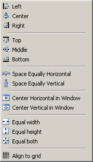

|
This item opens a menu that provides several alignment commands for both controls or groups of controls. |
 |
| Left | align the left side of all selected controls to the left side position of the first selected control. |
| Center | align the center position of all selected controls to the center position of the first selected control. |
| Right | align the right side of all selected controls to the right side position of the first selected control. |
| Top | align the top side of all selected controls to the top side position of the first selected control. |
| Middle | align the middle line position of all selected controls to the middle line position of the first selected control. |
| Bottom | align the bottom side of all selected controls to the bottom side position of the first selected control. |
| Space Equally Horizontally [Vertically] | make the space between all selected controls equal. |
| Center Horizontally [Vertically] | in Window center the group of controls in the window. |
| Equal Width | make the width of all selected controls the same as the first selected control. |
| Equal Height | make the height of all selected controls the same as the first selected control. |
| Equal Both | make both the width and height of all selected controls the same as the first selected control. |
| Align to grid | align to grid selected displaced controls. |